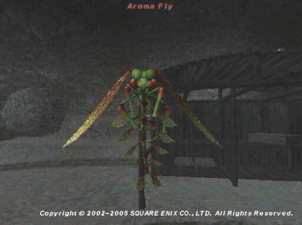

Level 75 reference · Zenith rules
|
Job: Notorious Monster |
 Image source |


|
Zone |
Level |
Drops |
Steal |
Spawns |
Notes |
|
HP = Detects Low HP; M = Detects Magic; Sc = Follows by Scent; T(S) = True-sight; T(H) = True-hearing JA = Detects job abilities; WS = Detects weaponskills; Z(D) = Asleep in Daytime; Z(N) = Asleep at Nighttime | |||||
Notes:
- Can be spawned during your RSE week by clicking on a ???.
- Soloable at 55-60
- Drop rate on your Sachet is ~15%
- ??? respawn every 15-30 minutes after being killed.
- ??? have been seen at:
- I-8 on Map 2, in the shack
- F-7 on Map 3 (see the note underneath the attached map, the position marked on the map is incorrect)
- H-8/H-9 on Map 4
-
Gusgen Mines 2
-
Gusgen Mines 3
-
Gusgen Mines 4


Adapted from Eden Wiki: Aroma Fly · Contributors and history · CC BY-SA 4.0. Revision 1583. Layout, links and optional background text adapted for Zenith.